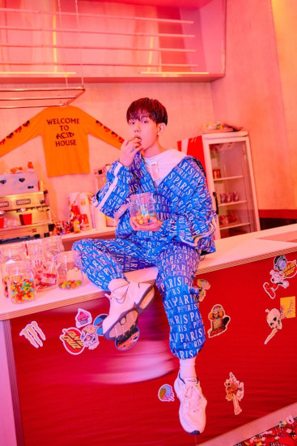

Quem é Byun Baek-hyun?
Byun Baek-hyun, nascido em 6 de maio de 1992, mais frequentemente creditado na carreira musical apenas como Baekhyun (em coreano: 백현), é um cantor, dançarino e ator sul-coreano. Foi apresentado como membro do grupo EXO em janeiro de 2012, estreando oficialmente em abril do mesmo ano com o EP MAMA, e desde então o grupo passou a dominar a cena musical sul-coreana, com sucessos como "Growl" de 2013 e "Love Me Right" de 2015, configurando-os como um ato dominante em grande parte da Ásia, e um dos principais representantes da onda Coreana mundialmente.
Treinamento
Baekhyun começou a treinar para ser um cantor quando tinha 11 anos de idade, influenciado pelo cantor sul-coreano Rain.Frequentou Jungwon High School em Bucheon, onde foi o vocalista de uma banda chamada "Honsusangtae" e ganhou um prêmio em um festival de música local. Durante esse período, recusou várias propostas de agências de talentos.
Além de atividades musicais, Baekhyun treinou como um artista marcial na sua juventude, conquistando uma faixa preta em Hapkido. Baekhyun foi descoberto por um agente da SM Entertainment enquanto estava estudando para os exames de admissão para Seoul Institute of the Arts, e se juntou a agência através do S.M. Casting System em 2011. Em 2012 ingressou na Kyung Hee Cyber University recebendo aulas on-line para o Departamento de Cultura e Administração de Artes.
Carreira Solo
Em 10 de junho de 2019, foi confirmado que Baekhyun estrearia como artista solo em julho, tornando-se o terceiro solista entre os membros do EXO, sucedendo Lay e Chen. Mais tarde foi revelado o lançamento de seu primeiro extended play, intitulado City Lights, para 10 de julho. O EP estreou na posição de número 1 da Gaon Album Chart. Em sua pré-venda o EP atingiu 401.545 cópias em oito dias, tornando-o o álbum solo mais vendido na Coreia do Sul desde 7th Issue em 2004 por Seo Taiji, enquanto sua versão padrão vendeu mais de 500 mil cópias em seu primeiro mês de lançamento. O EP foi aclamado pela crítica como um dos melhores álbuns de K-Pop do ano pela Billboard, ocupando a 12ª posição entre os 25 melhores álbuns. A publicação ainda declarou: "Pode ser apenas o seu primeiro álbum, mas a excelência do City Lights iluminou o mundo em 2019."
Conquistas de sua Carreira Solo
Baekhyun tornou-se o primeiro artista da SM Entertainment a conseguir um all-kill tanto em 2016 quanto em 2017 para "Dream" e "Rain", respectivamente. Seu primeiro extended play, intitulado City Lights, foi lançado em 10 de julho de 2019. Em outubro de 2019, Baekhyun fez sua estreia como membro do supergrupo SuperM, formado pela SM Entertainment em parceria com a Capitol Records.
Lançamentos ao longo de sua Carreira
-

Delight (25 de maio de 2020): Segundo mini-álbum, contém 7 faixas incluindo o single principal "Candy". - Bambi (30 de março de 2021): Terceiro mini-álbum,contém 6 faixas, incluindoo single "Amusement Park" e sua faixa principal "Bambi".
- Hello, World (06 Setembro de 2024): Quarto mini-álbum, contendo 6 faixas, incluindo o single principal "Pineapple Slice".
- Essence of Reverie (19 de maio de 2025): Quinto mini-álbum, contendo 7 faixas, incluindo 1 single "Chocolate" de pré-lançamento e 2 singles principais "Elevator" e "Lemonade".